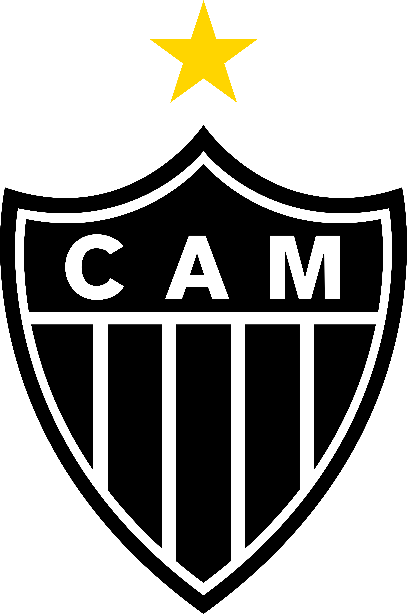

-
ABC
Com 57 títulos, o ABC possui o maior número de títulos no estado do Rio Grande do Norte .
-
BAHIA

O Tricolor de Aço, como é conhecido o Esporte Clube Bahia, é o maior campeão do estado com 50 títulos.
-
Paysandu

O Papão da Curuzu, é o maior campeão do estado do Pará, com 49 títulos.
-
Atlético
- MG
- GALO
Com 48 títulos estaduais, o Galo, como é conhecido o Atletico Mineiro, possui o maior número de títulos em Minas Gerais.
-
Rio Branco
Como maior campeão do Acre, o Rio Branco detém 47 títulos.
-
Fortaleza
- CE
- LEÃO DO PICI
Com 46 títulos, o Fortaleza é o maior campeão no estado do Ceará.
-
Internacional

- RS
- Colorado
Detentor de 45 títulos, o Internacional é o maior campeão no estado do Rio Grande do Sul.
-
Nacional

- AM
- Naça
O Nacional é o maior campeão do Campeonato Amazonense, com 42 títulos.